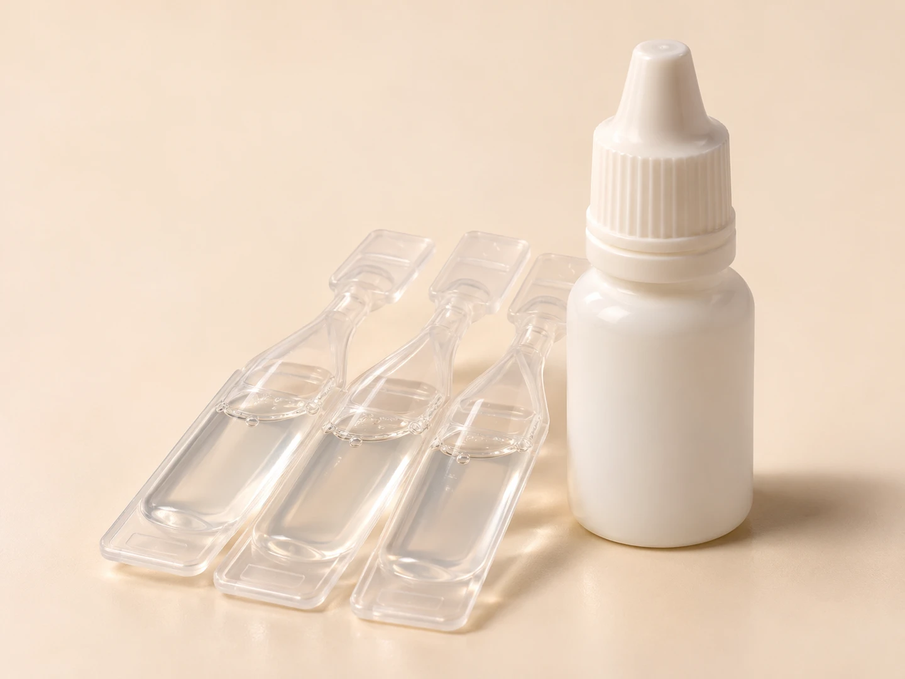
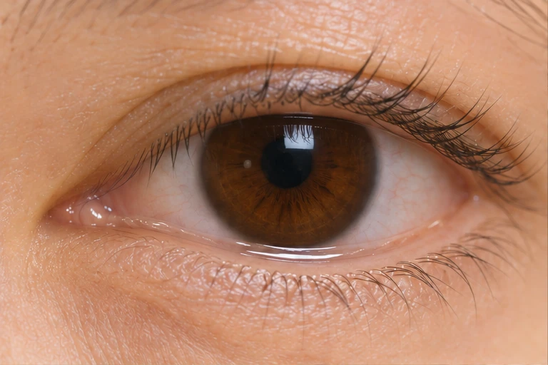
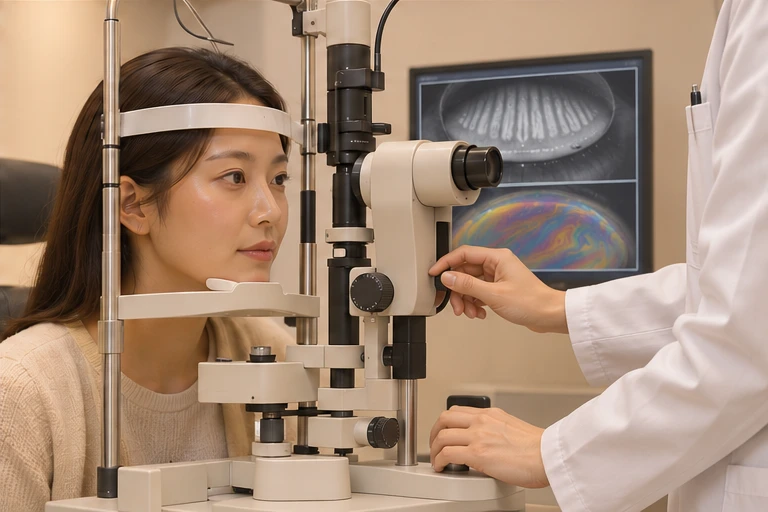

Dry Eye
반복되는 눈의 불편, 눈 표면부터 살핍니다
눈물막과 눈꺼풀, 생활 속 환경을 함께 확인해 알맞은 관리 방법을 안내합니다.
About
안구건조증
눈물막이 눈 표면을 충분히 보호하지 못하는 상태입니다.
눈물이 부족하거나 너무 빨리 증발하면 불편이 생깁니다. 뻑뻑함·따가움·이물감과 일시적인 시야 흐림이 나타납니다. 눈물과 각막뿐 아니라 눈꺼풀 상태도 함께 살펴봅니다. 증상과 원인에 맞춰 생활 관리와 치료를 상담합니다.

Issue
안구건조증
안구건조증에는 눈물의 양뿐 아니라
눈물의 증발과 눈꺼풀 상태도 영향을 줍니다.
화면을 오래 보거나 건조한 곳에서 증상이 심해지면
눈 표면을 검사해 원인에 맞는 치료를 상담합니다.
안구건조증 진단 경험 비율
단위: %(국내 19–95세 대표 표본 연구입니다. 진단 경험이 없는 집단에 미진단자가 있을 수 있습니다.)
안구건조 증상 경험 비율
단위: %(동일 연구의 증상 경험 기준입니다. 진단 경험과는 다른 지표입니다.)
Causes of
안구건조증
원인과 위험요인
눈물 분비 감소, 빠른 눈물 증발, 작업환경 등을 함께 살펴봅니다.

눈물 분비 감소
나이·약물·전신 질환 등이 눈물 분비에 영향을 줄 수 있습니다.
빠른 눈물 증발
눈꺼풀과 눈물막의 상태에 따라 눈물이 빨리 마릅니다.
작업환경
PC 작업이나 건조한 환경에서 불편이 커질 수 있습니다.
이런 증상이 있으신가요?
평소 느꼈던 눈의 불편을 선택해 주세요.

체크 개수는 진단 기준이 아닙니다. 정확한 원인은 검사를 통해 확인합니다.
증상을 1개 이상 선택해 주세요.